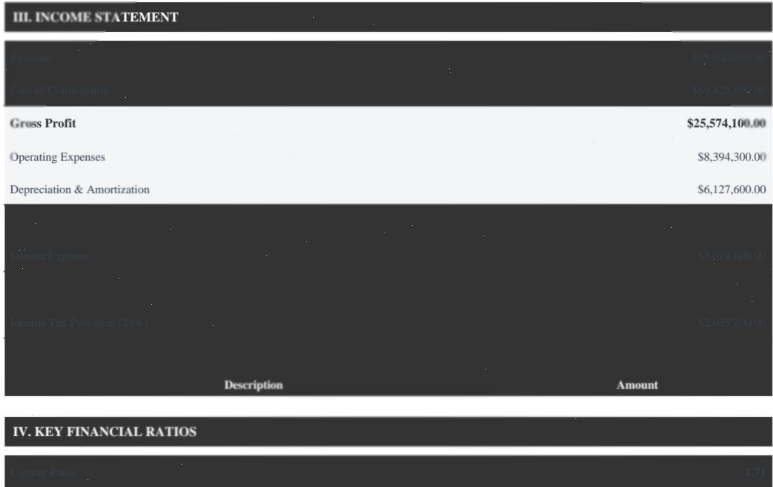

TL;DR: on visually-degraded documents, GPT-5.4 and GPT-5.5 fabricate numeric values at 2.6 to 6.5 times the rate of Opus 4.7 and Sonnet 4.6 at matched default effort (all four with thinking off). When the Anthropic models can't read a field cleanly they return null, which is the right move. The OpenAI models confidently fill in a plausible-looking number instead. Same 148 documents, same prompts, same scoring pipeline. Rerunning at matched HIGH and XHIGH reasoning effort (which is also where Gemini 3.1 Pro can fairly come back in, since it has no thinking-off mode) narrows the gap but doesn't close it: GPT-5.4 drops to 2.5% numeric hallucination at HIGH while Opus, Sonnet, and Gemini stay roughly flat. GPT-5.5 (released April 23) doesn't reproduce GPT-5.4's HIGH-effort improvement; its numeric rate is flat across effort levels and at HIGH actually exceeds GPT-5.4's.
| Metric | GPT-5.5 | GPT-5.4 | Opus 4.7 | Sonnet 4.6 |
|---|---|---|---|---|
| Numeric hallucination rate | 3.7% | 3.9% | 0.6% | 1.4% |
| String hallucination rate | 7.0% | 6.9% | 3.4% | 4.3% |
| Fabricated values per document | 3.9 | 3.5 | 1.5 | 2.2 |
Gemini 3.1 Pro isn't in this default-effort table. Its API has no thinking-off mode (default is HIGH), so a default-vs-default row wouldn't be a matched comparison. It reappears in the matched HIGH and XHIGH tables further down.
| Comparator | GPT-5.4 worse | GPT-5.4 better | Ties |
|---|---|---|---|
| vs GPT-5.5 | 30 | 41 | 77 |
| vs Opus 4.7 | 55 | 8 | 85 |
| vs Sonnet 4.6 | 47 | 24 | 77 |
| vs Gemini 3.1 Pro | 59 | 5 | 84 |
On 27 of the 148 documents, GPT-5.4 fabricates more than every other Anthropic/Google comparator simultaneously (Opus, Sonnet, and Gemini); on only 1 does it fabricate less than all three. The GPT-5.5 row is the closest comparison: it's the only paired matchup where GPT-5.4 wins (i.e., fabricates less) more often than it loses, which says less about GPT-5.4 improving and more about GPT-5.5 not.
Exact-match evals against flat field values won't catch any of this. The OpenAI outputs look fine in isolation: the currency is well-formed, the rows match the schema, and the numbers tie back to each other cleanly. You need labeled adversarial ground truth plus paired-comparison scoring across models to see this kind of failure at all, which is why I'm building Aginor.
The $95M financial statement

GPT-5.4 reported $40.6M of revenue. Four of its six income-statement lines came back off by millions of dollars, but the fabricated numbers were all internally consistent with each other. Revenue minus COGS equaled gross profit, the income tax worked out to a plausible effective rate, the whole thing added up cleanly. That's why a flat schema or arithmetic check won't catch it. Opus 4.7 and Sonnet 4.6 both returned null for revenue, COGS, and the rest of the hard-to-read lines, which is the correct move when you can't confidently extract a value. Gemini 3.1 Pro was the only model that read through the dark-grey-on-dark-grey rendering and returned the correct figures.
GPT-5.5 (released two days before this writeup) doubled down. Where GPT-5.4 was off by tens of millions, GPT-5.5 was off by hundreds: it reported revenue of $405.86M against an actual $95.0M (off by $310.9M) and cost of goods sold of $380.29M against an actual $69.4M (off by $310.9M). Same gross profit ($25.57M), arrived at by inflating both sides of the subtraction by the same $310.9M. The internal consistency that made GPT-5.4's output hard to catch still holds; the underlying fabrication is just about 5.7x bigger.
| Line item | Actual | GPT-5.5 | GPT-5.4 | Opus 4.7 | Sonnet 4.6 | Gemini 3.1 Pro |
|---|---|---|---|---|---|---|
| Revenue | $95.0M | $405.9M | $40.6M | null | null | $95.0M |
| COGS | $69.4M | $380.3M | $15.0M | null | null | $69.4M |
| Interest expense | $3.02M | $3.01M | $1.02M | null | null | $3.02M |
| Net income | $6.00M | $5.88M | $7.55M | null | null | $6.00M |
GPT-5.4 raw output, unedited:
"income_statement": {
"revenue": {
"gross_revenue": null,
"net_revenue": 40593800
},
"cost_of_goods_sold": 15019700,
"gross_profit": 25574100,
"operating_income": 11052200,
"interest_expense": 1017400,
"income_before_tax": 10034800,
"income_tax": 2485400,
"net_income": 7549400
}See it yourself: rendered PDF · ground truth · all five model extractions (default / HIGH / XHIGH)
The ACORD 45 property schedule
GPT-5.4 returned all 9 rows. Row 2 is fabricated: it reports "Rockford Air Hub" at $24.0M where the PDF shows "Rickerbacker Air Hub" at $14.8M (the N5 render glyph-corrupts the canonical "Rickenbacker"). Opus 4.7, Sonnet 4.6, and GPT-5.5 all returned "Rickenbacker Air Hub", the canonical form, not the "Rickerbacker" their input shows. I can't tell from the outside whether those three models read the corrupted glyphs and pattern-matched to the real airport, or whether something cleaned it up before they ever saw it. Either way, they got the right name. GPT-5.4's output has no visual or phonetic relationship to anything on the page. Row 6 has a quieter version of the same issue: "Harrisburg Consolidation Hub" came back as "Hamburg Consolidation Hub." Per-row building values are wrong on 8 of the 9 rows, but the grand building total is exact to the dollar and the contents total is off by 0.4%, so spot-checking by summing columns won't catch the fabrication. Gemini skipped the per-location breakout and returned only an aggregate.
This is the case where GPT-5.5 visibly improves: same row, same input, it produces row 2 as "Rickenbacker Air Hub" at $14.8M. So the per-row fabrication on this specific document is a GPT-5.4-only failure mode. The aggregate numbers say the broader pattern (5.5 fabricating numbers at roughly the same rate as 5.4) is unchanged.
| Model | Locations | Row 2 name (PDF shows "Rickerbacker"; canonical is "Rickenbacker") | Row 2 value (truth: $14.8M) |
|---|---|---|---|
| GPT-5.5 | 9 | "Rickenbacker Air Hub" ✓ | $14.8M ✓ |
| GPT-5.4 | 9 | "Rockford Air Hub" | $24.0M |
| Opus 4.7 | 9 | "Rickenbacker Air Hub" ✓ | $14.8M ✓ |
| Sonnet 4.6 | 9 | "Rickenbacker Air Hub" ✓ | $14.8M ✓ |
| Gemini 3.1 Pro | aggregate only | n/a | n/a |
GPT-5.4 raw output (location 2 plus totals, unedited):
"building_location_2": "Rockford Air Hub",
"building_location_2_building": 24000000,
"building_location_2_contents": 7000000,
"building_location_2_business_income": 5400000,
"building_location_2_tiv": 36400000,
"building_location_3": "Cleveland Distribution Center",
"building_location_4": "Pittsburgh Regional Terminal",
"building_location_5": "Philadelphia Cross-Dock",
"building_location_6": "Hamburg Consolidation Hub",
"building_location_7": "Toledo Service Center",
"building_location_8": "Fleet Maintenance Center",
"building_location_9": "Administrative Office",
...
"total_building": 54110000,
"total_contents": 30200000See it yourself: rendered PDF · schedule ground truth · full packet ground truth · all five model extractions (default / HIGH / XHIGH)
At every reasoning level
I reran the 148-document test at three reasoning-effort levels for each model: default, HIGH, and XHIGH (Sonnet's XHIGH-equivalent is effort=max, its ceiling). Matched-effort comparisons are the clean read.
| Model | Default | HIGH | XHIGH |
|---|---|---|---|
| GPT-5.5 | 3.7% | 4.2% | 3.9% |
| GPT-5.4 | 3.9% | 2.5% | 3.1%* |
| Opus 4.7 | 0.6% | 0.7% | 1.0% |
| Sonnet 4.6 | 1.4% | 1.5%† | 1.4%‡ |
| Gemini 3.1 Pro | 0.8% | 1.2% | 0.9% |
| Model | Default | HIGH | XHIGH |
|---|---|---|---|
| GPT-5.5 | 7.0% | 6.3% | 6.3% |
| GPT-5.4 | 6.9% | 4.7% | 2.7%* |
| Opus 4.7 | 3.4% | 3.0% | 4.3% |
| Sonnet 4.6 | 4.3% | 3.9%† | 4.6%‡ |
| Gemini 3.1 Pro | 2.6% | 2.1% | 2.4% |
* GPT-5.4 XHIGH: n=146 (2 docs timed out). † Sonnet HIGH: n=147 (1 doc). ‡ Sonnet XHIGH: n=141 (7 docs). See "Excluded cells" below.
Thinking helps GPT-5.4 cleanly on string hallucination (6.9% → 4.7% → 2.7%) and messily on numeric (3.9% drops to 2.5% at HIGH, rebounds to 3.1% at XHIGH). GPT-5.5 doesn't reproduce that gradient. Its numeric rate is flat across effort levels (3.7% / 4.2% / 3.9%) and at HIGH actually exceeds GPT-5.4's. On the string side, 5.5 nudges down (7.0% → 6.3%) and stops; where GPT-5.4 falls to 2.7% at XHIGH, GPT-5.5 stays at 6.3%. The other three models don't respond to the lever either: Opus, Sonnet, and Gemini show flat numeric rates across effort levels, and the small drifts go in the wrong direction (Opus 0.6% → 1.0%). Even if the 2 timed-out docs came back with 0 hallucinations, it doesn't help here: GPT-5.4 XHIGH still lands at 3.02%, above its own 2.45% HIGH rate.
At matched HIGH, GPT-5.4 fabricates numbers at 2.5% and GPT-5.5 at 4.2%, against Gemini 3.1 Pro's 1.2%, Opus 4.7's 0.7%, and Sonnet 4.6's 1.5%. The OpenAI/baseline gap narrows for GPT-5.4 (~2-4x depending on comparator) and widens for GPT-5.5 (~3-6x).
What's actually in Nightmare
148 documents across 5 difficulty levels (N1 clean digital up to N5 corruption plus handwriting plus cross-document mismatches), 9 categories spanning ACORDs, SOVs, loss runs in PDF/CSV/XLSX, dec pages, engineering reports, financial statements, driver schedules, narratives, and hybrid workbooks. The generator emits the PDF or XLSX and the ground-truth JSON in the same pass, so the labels are the same data that rendered the document. No labeling step. Prompts, schemas, and scoring code live in the public repo.
Caveats
Sample size
I ran one packet per difficulty level. That's enough for paired-document claims (same document, five models, same prompts) but not for academic-grade rate estimates. It's why I'm calling this a test, not a benchmark.
Hallucination analyzer threshold
The analyzer accepts strings of five or more tokens when at least 80% of the tokens match the source universe, so legitimate compounds like "LOC-001: Preston Center Tower, 8117 Preston Road, Dallas, TX 75225" pass through cleanly. The tradeoff is that one fabricated token can hide inside a long compound, which means the fabrication numbers undercount the OpenAI models (the high-fabrication side) rather than inflate them. Details in scripts/hallucination_analysis.py.
Thinking defaults vary by provider
The three providers disagree on what "default" means: Anthropic's Opus 4.7 and Sonnet 4.6 default to thinking off, OpenAI's GPT-5.4 and GPT-5.5 default to no reasoning_effort parameter (also thinking off), and Google's Gemini 3 defaults to HIGH with no thinking-off mode at all. That's why Gemini is out of the default-effort headline table. Running Gemini-at-HIGH against four thinking-off models would not be a matched comparison. It reappears in the HIGH and XHIGH tables below, where all five models are at matched effort. If you want the unmatched default-vs-default view (which is what a production customer hitting each API actually gets), read across the Default column in the per-effort tables. The raw report has exact API parameter names and values per provider, plus the Anthropic-adaptive-is-opt-in clarification (no-thinking-param means no thinking, not adaptive).
Thanks to the anonymous reviewer who flagged this thinking-default gap on the original draft.
Timeouts
Ten HIGH/XHIGH extractions exceeded the 20-minute client timeout and were dropped from their cells: 7 Sonnet XHIGH, 1 Sonnet HIGH, 2 GPT-5.4 XHIGH. Pattern: long scan-heavy loss-run and driver-schedule PDFs from N4 and N5, plus one ACORD 127 at N5. No Opus, no Gemini, no default-effort failures. Source PDFs are in the repo's examples/timeouts/ folder; the pivot tables' footnotes give the adjusted n per affected cell.
Failures are quiet
Across all five models, 37% of extractions scored below 0.5 composite without ever tripping a catastrophic-error flag, and only 3% crossed the catastrophic threshold at all. Your production pipeline isn't going to break in any obvious way on these documents. It's going to degrade field by field, underneath whatever review threshold you've trained your reviewers on, and you won't notice unless you're actively looking.
No hero model on raw accuracy
Overall composite scores cluster at 0.56 to 0.62 across all five frontier models. The actual signal between these models lives in the fabrication rate, not in the composite and not in the catastrophic-flag count.
Gemini's volume effect
Gemini's low fabrication rate is partly a volume effect. It emits 27.6 strings and 26.7 numbers per document on average versus 32 to 40 for the other four, so it has fewer chances to be wrong on any given document. Reading the Gemini row as "safest model" is probably misreading what the numbers are actually measuring.
Work with me
If you're at an insurance carrier or brokerage, I generate labeled synthetic submission packets against your book at whatever volume you want. Ground truth comes out alongside the rendered document, in the same pass, every field, every location, every line item. No labeling step to staff, no vendor to coordinate with, no calibration calls. Request a sample →
If you run a document-extraction platform, I'll size hard-case packets against the documents you actually work with, or port the generator to your vertical entirely (financial services, legal, healthcare, procurement, whatever you're on). The adversarial-pattern plumbing is already built, so porting is a template change, not a rebuild. Talk about custom packets →
The full 148-document test set is available under research or commercial license. I can also generate at training scale or build custom test sets on request. Licensing or access →
Run it yourself
Sample packet + scoring pipeline
Everything you need to reproduce the headline findings on the N1 easy packet is in the public repo (25 documents, ground truth, scoring engine, prompts): github.com/Tim-Aginor/nightmare-extraction-test.
Match your extractor output to the schema in prompts/, then run scripts/score.py for the per-category composite scores and catastrophic-error counts, and scripts/hallucination_analysis.py for the fabrication pass.
Full hallucination tables, exact API settings per model, and per-model run counts (including timeout exclusions) live in the raw report.
All data is synthetic: no real PII, no real policies, no real companies.